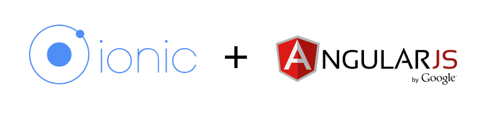

DESIGN
Click the following buttons to jump to the corresponding sections below:
Target Operating System Frameworks Platforms APIs ToolsArchitecture Design & Design Patterns
Target Operating System
Android & iOS
According to our client's requirement: "The aim would be to prove the concept on one mobile operating system (IOS, Android or Windows) before developing other platforms."
However, we aimed to target both Android and iOS in order to reach a wide range of target users and further satisfy our client. Using the Ionic framework, a hybrid app will be created, allowing it to be deployed to both Android and IOS platforms without major changes in source code.
The primary platform supported by this application is Android. We have tested the application on several Android devices (both virtual and real devices) including Google Nexus 4 and Samsung S6. The application can also be made available on other platforms including IOS and Windows Phone. However, this may require further testing on native features such as Camera, Local Notifications, and Printer/Export to PDF.
Frameworks
 BootStrap
BootStrap
Bootstrap is a framework that uses HTML, CSS and JavaScript for developing responsive websites. We used it to create and structure our website according to our needs.

Ionic, which is a robust HTML5 SDK, is a hybrid mobile development framework that allows developers to build mobile apps which feel native using CSS, HTML and JavaScript as web technologies, applications being built on AngularJS. We used it to help develop the front end of our mobile app.
Platforms

Firebase is a powerful, real-time, scalable backend as a service platform currently being maintained by Google. Firebase has various mixes of services including NoSQL data storage, real-time database, data analytics, cloud messaging, and user authentication, all packaged into a single SDK (software development kit). We used it to host our backend and its services.
APIs

EhrScape acts as the interface to the openEHR Clinical Data Repository and provides several service APIs to allow the building of open healthcare applications.
It consists of a set of various RESTful APIs meaning it uses HTTP requests like GET, PUT, POST and DELETE to store, retrieve and query data.
EhrScape provides various service APIs such as Terminology APIs, Eletronic Health Record APIs, Clinical Decision Support APIs, and Resource Store APIs.
Tools

Postman is a GUI Platform that aims to speed up API development through testing and documentation. In the context of What's The Plan, it is the perfect tool to test and experiment with EhrScape API calls outside of the application context.

Invision is a rapid-prototyping tool that can be used to design interactive mock-ups for applications. After finalising our sketches and getting them approved by our client, we used Invision to build our dynamic prototype to demonstrate the functionality of our app.

Trello is a web-based project management tool that we used to manage our individual tasks and objectives for every two weeks. It helped us with overseeing our tasks and contributed to effective time management and collaboration.
 Google Drive
Google Drive
Google Drive is a file cloud storage service that we made use of to effectively organise all the information we worked with such as requirements, research, biweekly reports, meeting minutes, UI designs, and more.
 GitHub
GitHub
GitHub is a web-based Git repository hosting service which we used to store the source code for our project website and experiments.
The link to our project repository is: https://github.com/bymi15/NHS-WhatsThePlan
Architecture Design & Design Patterns
Architecture Design & Model View Controller (MVC)
The mobile application was built using the Ionic framework which allowed us to build a hybrid app with HTML5 which acts like native and also gain direct access to native APIs such as the Camera. This allowed us to develop a single codebase which could be deployed to multiple platforms including Android and IOS. Ionic also provided us with various UI features such as lists and buttons which enhanced our development.
Ionic is built on top of Angular JS which means it follows the basic structure of the Angular JS MVC (Model-View-Controller) design pattern which we make use of in our app.
The views are represented by HTML files located in the templates folder, the controllers are defined in the controller.js file and the models are defined in the services.js file.
In services.js, we define various factory functions which encapsulate the data model. For instance, the User factory encapsulates the User model stored in Firebase, and the Ehrscape service encapsulates the Ehrscape/OpenEHR API with various methods that allow RESTful access to the API. These services are injected into the controllers that require them. For instance, the User factory is injected into the User controller which may call the User.createUser function to create a new User entry in firebase. The controllers handle most of the logic and store the data object in the scope variable. The views make use of this data object by displaying them in HTML.
The Ehrscape API is accessed via HTTP requests which are created using the AngularJS $http service. These are all encapsulated inside the Ehrscape factory method in services.js. The requests are made asynchronously so the responses are handled with promises and callbacks which process the JSON response and store it as an object inside the Ionic scope variable. The `view` can therefore access the data via the scope variable.
Example
Notes – factory method for Consultation Notes
Methods:
-getNotes(uid) – retrieves the consultation notes of the uid (user ID) from Firebase
-getNote(id, uid) – retrieves the consultation note with ID: id from Firebase
-addNote(uid, title, consultant, location, datetime, notes) – adds a consultation note entry to Firebase under the key: uid
-updateNote(uid, id, title, consultant, location, datetime, notes) – updates the consultation note with ID: id with new values
-removeNote(id, uid) – removes the consultation note with ID: id from Firebase
Injected in:
-notesCtrl (Notes Controller)
-addNotesCtrl (Add Notes Controller)
-viewNoteCtrl (View Note Controller)
-editNoteCtrl (Edit Note Controller)
-exportDataCtrl (Export Data Controller)
Below is the architecture design diagram for our final Proof of Concept mobile app: